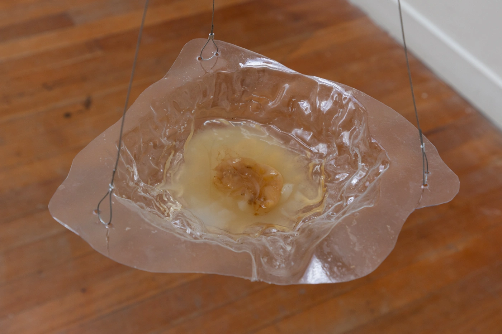
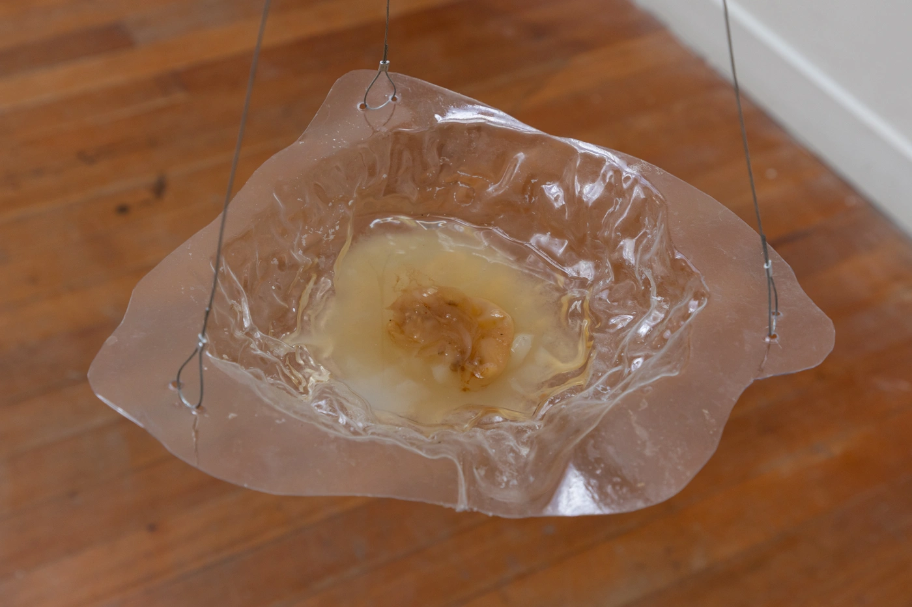

Jiyun Nam
Coming in and going out
yeast, bacteria, tea, sugar, glass, 150×250×100cm
Jiyun presents an installation that visualizes the transformation of sugar and tea into kombucha through the fermentation process of a SCOBY (Symbiotic Culture of Bacteria and Yeast) over time. SCOBY, a microbial culture where bacteria and yeast coexist, absorbs nutrients and organic matter from its environment, metabolizing them into a new living substance—kombucha. This metabolic process is not merely a chemical reaction but is deeply connected to the cycles of life, as well as the boundaries between life and death. The impact of these microbial activities gradually expands, manifesting through visible physical transformations. Similarly, the human body is not an isolated entity but a system that coexists with microbes. Every day, we consume food, digest it, and rely on microbial interactions to sustain our bodies, constantly exchanging matter with the environment. Through the act of consuming the kombucha produced by SCOBY, the artist poses the questions. "What do we take in, and what do we release?"